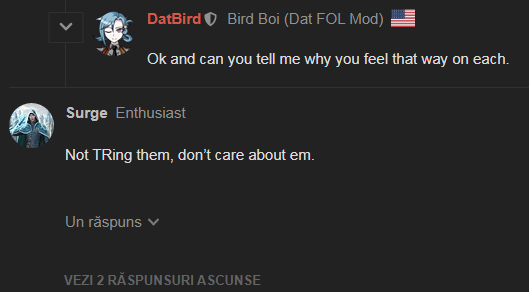
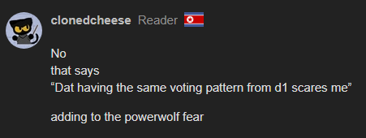

cool was about to sus ami but I guess that takes care of it
so let’s assume only 1 scum left
I’m clear
Surge is clear
eevee is clear
Next list goes Mist > Dat > Silviu from most to least likely town

cool was about to sus ami but I guess that takes care of it
so let’s assume only 1 scum left
I’m clear
Surge is clear
eevee is clear
Next list goes Mist > Dat > Silviu from most to least likely town
Oops this is not the full thing
I agree that cloned is townie from their behavior because I analyzed them
Now in order to counter Surge and to prove that he legit got his mentality backwards, we got to analyze his behavior to draw the conclusion why he should actually be quiet as it would be better.
This screenshot right here proving his mentality is “Do first, think after”, now cloned also seem to be angered by him, right? Well this proves that Surge just pester people to vote somebody without actually providing any proof why.
Now we need to look why he suddently decided that it might be me.

It would be understandable if he suspected eevee, Ami, me and gortha because we don’t speak as often but the fact he said that he just… doesn’t care about us is just simply… I don’t know how I should put this.
He legit think is alright to get rid of some people although they might come up later and potentially having an important role.
Now this is where it started to be obvious that they’re just simply sore because I got rid of someone who was legit going buddy-buddy with surge. Kiro just needed to say that they trust surge and done: friendship forever, let’s kill the haters together.
Now because he needs to bluff to get somebody out easily he legit scrolled long enough to see that I didn’t know what a VT is but didn’t see that somebody explained that to me.
Now if he says that “it’s just a joke” I’m going to figuratively stab him and hope it will hurt. And from point forward he just seem to be hurt that the only person trusting them was kiro that got eliminated because I decided to dare doubt him.
Legit says that I said other stuff that’s wolfy, but doesn’t mention them, and if I see him say he was lazy while I legit pointed out he could scroll up so high to see me not knowing what a VT is, he’s getting the figurative backhand.
!Now he got the mentality backwards, killing Dat in another game because they thought it is them, thinking Gorta is a townie to the point he doesn’t even get evidence. I can tell he got his intuition backwards, now I don’t know if we should trust his intuition but the opposite way, and this concludes that Surge legit doesn’t know what they’re doing.
And now I hope they actually use their thought process given by mommy and daddy and not blindly following their intuition like a 9-year-old ejecting the innocent into the space because they believe somebody is the imposter.
Whether you like it or not I think Surge is confirmed villager from Mist
either Mist is lying and Surge is still town, or Mist is telling the truth and Surge is indeed town
yo you might wanna fix this
I know Surge is a confirmed townie but he doesn’t think clearly and yeah sorry apparently the images didn’t quite load in, give me a second.
Goodness grace, now the files really refuse to load in, give me an hour at best
Whos gortas team mate, idfk
Ok lets try and cut people that couldnt be his mate:
that leaves
Silviu
Cloned
Mist
Eevee
Ami
If I had to rank em on current reads before flip
Mist
Cloned
Ami
Silviu
Eevee
Considering gortas flip
Cloned prob jumps above Mist. Silviu prob drop as it felt kinda bussy, ami is prob town based on the fact that there was two and the role doesnt make sense with two scum, so they prob lock town. Mist drops cause two people are prob more town. Eevee is in weird vote that depending on who suggested the eevee rb they can be higher or lower.
so prob like
Ami
Cloned
Mist
Eevee (tentative to drop below depending on ami)
Silviu
I might die tonight, id say night kill would prob be in me or Surge or Ami. Ami cause they practically confirmed town. Surge for the same. And me just cause im like semi cool and have okayish reads and actuall played/pushed for the lynch on scum.
I think cloned will do the same thing he does to arete if I survive, as like i pushed a wolf and got a lynch and im a semi ok player so hes gonna go deep wolf paranoia as hes already showed

like is he knows my scum meta, i am terrible as scum, and like only had 1 good game and potentially a second ebfore it got canned. And need a good teammate to keep the strive going. Gorta doesnt fit that. Sure I can pull off day 1 as seen by canned game but neither him or PKR did shit so i was losing wim.
I dont want to use sbpc as a defense but i will if this shit gets pushed by it. But self meta sucks
Basically best bet is I survive and cloned isnt in deepwolf city and follows poe.
If cheese is in deepwolf city i never die and will go to final 3 with him and scum
So plan is to die tonight, or get cloned to 100% beleive im town, which is hard seeing how he took to aretes slot in corrupt votes
so cloned here has me under two people that I also have lower. So i might be able to work with him tomorrow. Hopefully. He doesnt have eevee or ami on this list which is kinda odd. But its also like post the ami claim. Surge isnt on this list for obv reasons, but cheese needs to stop with this PL stuff
why am i solving so much into the night, idfk guess im nervous. I think i have 40ish percent chance to die. Prob with ami 20% (if they figure out that ami is kinda just locked town) and like surge 40%. Maybe they keep surge for chaos, maybe they keep me to get cheese to push me.
I think optimal start tomorrow
Does town have a chance if i die. Prob not, maybe cloned or Mist if they town can solve this, but the rest  im not feeling confidant
im not feeling confidant
eh need to focus on other things, but this shit is gonna prob be out of my hands anyway
wait I just realized that mist is rolecheck not alignment check
So eevee is 100% town, because mafia tried to RB them and there was still a kill
Both Surge and myself are Vanilla if Mist is telling the truth, Town if not
Mist could be lying as their checks have been pretty easy ones, but that’s a lot of FPS for last scum remaining
Dat’s just been lackluster and all I have to go off of is social reads which I horrible at
Silviu just exists
I’d say today’s between Dat/Silviu
fuck
Um, dat, Ami is dead. I didn’t read the list through but I believe you’re ranking them if they’re more townie or mafiotic
this is a misunderstanding on your part; that’s me stating the order I want people killed in
you were 4th yesterday, and you’re 5th today
but silviu/you/mist is still fuzzy for me
that’s a list from last night btw
Now I don’t believe cloned is the mafia.
Oh boi, misty come here
So reminder about this. 1 we dont know for sure that they both did this as 1 it was only said by gorta and he never did confirm wether ami did it, and ami never responded after saying they masons. So like I dont want to read way to much into it. The basic logic is eevee did get rbed. So he should prob have something today. But we also dont know who suggested the rb gorta or ami. So theres some unsureity on that.
I was hoping they wouldnt see that ami is like lock towned and we would get more info but they did and now that whole situation is so full of just blank speculation and words from a wolf
Based on who claimed & general activity (grumble grumble), I think it’s more likely it was gorta’s idea
I’m not sure why you’re suspecting dat, they’re acting like their last game.
And also:
…this would be me


{kind=link}
{kind=link}
{kind=link}
{kind=link}
{kind=link}
{kind=link}
{kind=link}
{kind=link}